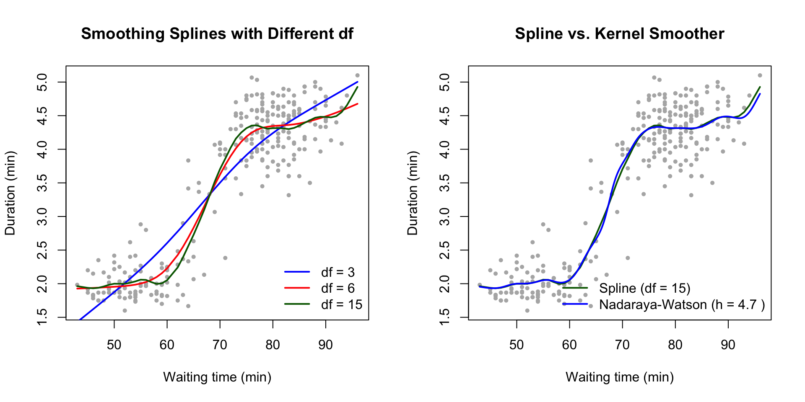
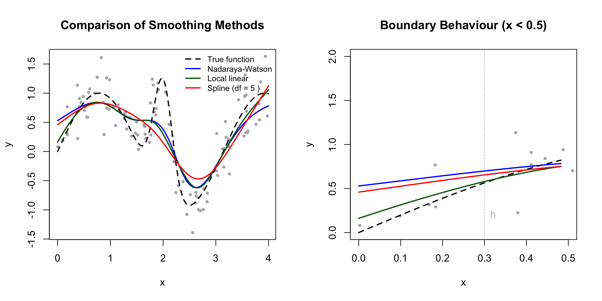

Section 7 Spline Smoothing
The previous sections showed how kernel methods and \(k\)-nearest neighbour methods estimate the regression function \(m\colon \mathbb{R}\to \mathbb{R}\) from data \((x_1, y_1), \ldots, (x_n, y_n)\). In this section we introduce an alternative approach based on spline smoothing. Instead of local averaging, we fit a smooth function globally to the entire dataset, using a penalty term to control the smoothness.
7.1 Smoothing Splines
Spline smoothing finds a function \(m\) that balances two competing goals:
- Fit the data well: minimise the residual sum of squares \(\sum_{i=1}^n \bigl( y_i - m(x_i) \bigr)^2\).
- Remain smooth: avoid excessive curvature.
We measure the curvature of a function \(m\) using the integral of the squared second derivative: \[\begin{equation*} \int_{-\infty}^\infty \bigl( m''(x) \bigr)^2 \,dx. \end{equation*}\] A function with high curvature produces a large integral; a nearly linear function produces a small integral. A linear function \(m(x) = a + bx\) has \(m''(x) = 0\), giving an integral of zero.
Definition 7.1 The smoothing spline estimate for the regression function \(m\) is the function \(\hat m_\lambda\) which minimises \[\begin{equation} I(m) = \sum_{i=1}^n \bigl( y_i - m(x_i) \bigr)^2 + \lambda \int_{-\infty}^\infty \bigl( m''(x) \bigr)^2 \,dx \tag{7.1} \end{equation}\] over all twice differentiable functions \(m\colon \mathbb{R}\to \mathbb{R}\). The parameter \(\lambda \geq 0\) is called the smoothing parameter.
The smoothing parameter \(\lambda\) controls the trade-off between fitting the data and smoothness:
- For \(\lambda = 0\), only the residual sum of squares matters, and the solution is the interpolating function which passes through all data points.
- For \(\lambda \to \infty\), only the smoothness matters, and the solution is the linear regression line (which has zero curvature).
- For intermediate values of \(\lambda\), the solution balances fit and smoothness.
This is similar to ridge regression (see section 16 of the level 3 notes), where a penalty term \(\lambda \|\beta\|^2\) is added to the residual sum of squares to control the size of the coefficients.
7.2 Cubic Splines
Before we can state the solution to the optimization problem in definition 7.1, we need to introduce the concept of a cubic spline.
Definition 7.2 A cubic spline with knots \(\kappa_1 < \kappa_2 < \cdots < \kappa_k\) is a function \(s\colon \mathbb{R}\to \mathbb{R}\) such that
- \(s\) is a cubic polynomial on each interval \((-\infty, \kappa_1)\), \((\kappa_1, \kappa_2)\), …, \((\kappa_{k-1}, \kappa_k)\), and \((\kappa_k, \infty)\), and
- \(s\) is twice continuously differentiable, i.e. \(s\), \(s'\) and \(s''\) are all continuous.
A natural cubic spline is a cubic spline which is linear on the intervals \((-\infty, \kappa_1)\) and \((\kappa_k, \infty)\).
The points \(\kappa_1, \ldots, \kappa_k\) are called knots. At each knot, the function \(s\) transitions from one cubic polynomial to another, but the transition is smooth because \(s\), \(s'\) and \(s''\) are all continuous.
Example 7.1 Consider the knots at \(\kappa_1 = 0\), \(\kappa_2 = 1\), and \(\kappa_3 = 2\). We will show that the function defined by
- On \((-\infty, 0)\): \(s(x) = \frac{3}{2}x\)
- On \((0, 1)\): \(s(x) = \frac{3}{2}x - \frac{1}{2}x^3\)
- On \((1, 2)\): \(s(x) = \frac{3}{2}(2-x) - \frac{1}{2}(2-x)^3\)
- On \((2, \infty)\): \(s(x) = \frac{3}{2}(2-x)\) (linear)
is a natural cubic spline, by checking values and continuity at the knots. For \(\kappa_1 = 0\) we have:
- \(s(0^-) = 0\) and \(s(0^+) = 0\)
- \(s'(0^-) = \frac{3}{2}\) and \(s'(0^+) = \frac{3}{2}\)
- \(s''(0^-) = 0\) and \(s''(0^+) = 0\)
For the knot \(\kappa_2 = 1\) we get:
- \(s(1^-) = \frac{3}{2} - \frac{1}{2} = 1\) and \(s(1^+) = \frac{3}{2} - \frac{1}{2} = 1\)
- \(s'(1^-) = \frac{3}{2} - \frac{3}{2} = 0\) and \(s'(1^+) = -\frac{3}{2} + \frac{3}{2} = 0\)
- \(s''(1^-) = -3\) and \(s''(1^+) = -3\)
Finally, for the knot \(\kappa_3 = 2\) we find:
- \(s(2^-) = 0\) and \(s(2^+) = 0\)
- \(s'(2^-) = -\frac{3}{2}\) and \(s'(2^+) = -\frac{3}{2}\)
- \(s''(2^-) = 0\) and \(s''(2^+) = 0\)
Thus, \(s\) is indeed a natural cubic spline.
The following theorem shows that the solution to the smoothing spline problem is always a natural cubic spline.
Theorem 7.1 The solution \(\hat m_\lambda\) to the optimization problem in definition 7.1 is a natural cubic spline with knots at the data points \(x_1, \ldots, x_n\).
Proof. We sketch the main idea of the proof, showing that the solution must be a cubic spline.
The “calculus of variations” shows that among all twice-differentiable functions \(f\colon [x_i, x_{i+1}] \to \mathbb{R}\) with given values and derivatives at the endpoints, the cubic polynomial minimises \(\int_{x_i}^{x_{i+1}} [f''(x)]^2 dx\). Equality holds only if \(\hat m_\lambda\) is already cubic on \([x_i, x_{i+1}]\).
Now suppose \(\hat m_\lambda\) is the solution but \(\hat m_\lambda\) is not a cubic polynomial on some interval \([x_i, x_{i+1}]\). We will show that this leads to a contradiction.
Let \(p\) be the unique cubic polynomial on \([x_i, x_{i+1}]\) which matches \(\hat m_\lambda\) in value and first derivative at both endpoints: \(p(x_i) = \hat m_\lambda(x_i)\), \(p'(x_i) = \hat m_\lambda'(x_i)\), \(p(x_{i+1}) = \hat m_\lambda(x_{i+1})\), and \(p'(x_{i+1}) = \hat m_\lambda'(x_{i+1})\). Now consider the function \(\tilde m\) which equals \(\hat m_\lambda\) outside \([x_i, x_{i+1}]\) and equals \(p\) on \([x_i, x_{i+1}]\).
Since \(\tilde m\) agrees with \(\hat m_\lambda\) at all data points, both functions produce the same residual sum of squares. However, \(\tilde m\) has a smaller penalty term: \[\begin{equation*} \int_{-\infty}^\infty \bigl( \tilde m''(x) \bigr)^2 \,dx < \int_{-\infty}^\infty \bigl( \hat m_\lambda''(x) \bigr)^2 \,dx, \end{equation*}\] by the property of cubic polynomials mentioned above. This contradicts the assumption that \(\hat m_\lambda\) minimises equation (7.1). Therefore, \(\hat m_\lambda\) must be a cubic polynomial on each interval \([x_i, x_{i+1}]\).
A similar argument shows that \(\hat m_\lambda\) must be twice continuously differentiable at the knots, completing the proof that \(\hat m_\lambda\) is a cubic spline.
The theorem shows that the smoothing spline is a natural cubic spline with \(n\) knots at the data points \(x_1, \ldots, x_n\). Such a spline consists of:
- A linear function on \((-\infty, x_1)\): 2 parameters
- Cubic polynomials on each of the \(n-1\) intervals between consecutive knots: \(4(n-1)\) parameters
- A linear function on \((x_n, \infty)\): 2 parameters
This gives \(2 + 4(n-1) + 2 = 4n\) parameters initially. However, at each of the \(n\) knots, we require continuity of the function, its first derivative, and its second derivative. This imposes \(3n\) constraints, leaving \(4n - 3n = n\) free parameters. With \(n\) free parameters and \(n\) data points \((x_1, y_1), \ldots, (x_n, y_n)\), we could make the spline pass through all data points exactly—a perfect interpolating fit. This corresponds to \(\lambda = 0\). For \(\lambda > 0\), the penalty term in equation (7.1) forces the spline to be smoother, in exchange for imperfect fit.
7.3 Degrees of Freedom
As with linear regression, we can write the smoothing spline estimate in matrix form. Let \(y = (y_1, \ldots, y_n)^\top\) be the vector of responses, and let \(\hat y = (\hat m_\lambda(x_1), \ldots, \hat m_\lambda(x_n))^\top\) be the vector of fitted values. Then we can write \[\begin{equation} \hat y = S_\lambda y, \tag{7.2} \end{equation}\] where \(S_\lambda \in \mathbb{R}^{n\times n}\) is the smoother matrix. This is analogous to the hat matrix \(H = X(X^\top X)^{-1}X^\top\) in linear regression (see section 2 of the level 3 notes).
The smoother matrix \(S_\lambda\) depends on the smoothing parameter \(\lambda\) and on the data points \(x_1, \ldots, x_n\), but not on the responses \(y_1, \ldots, y_n\). We omit the explicit formula for \(S_\lambda\), but note that efficient algorithms exist for computing it.
Definition 7.3 The effective degrees of freedom of the smoothing spline estimate is \[\begin{equation*} \mathop{\mathrm{df}}\nolimits(\lambda) = \mathop{\mathrm{tr}}\nolimits(S_\lambda), \end{equation*}\] where \(\mathop{\mathrm{tr}}\nolimits\) denotes the trace of a matrix (the sum of the diagonal elements).
The effective degrees of freedom measure the complexity of the fitted model:
- For \(\lambda = 0\), the smoother matrix is \(S_0 = I\) (the identity matrix), and we have \(\mathop{\mathrm{df}}\nolimits(0) = n\). This corresponds to interpolation, where we use all \(n\) data points.
- For \(\lambda \to \infty\), the smoother matrix converges to the hat matrix of linear regression, and we have \(\mathop{\mathrm{df}}\nolimits(\infty) = 2\). This corresponds to fitting a straight line.
- For intermediate values of \(\lambda\), we have \(2 < \mathop{\mathrm{df}}\nolimits(\lambda) < n\).
The effective degrees of freedom provide an alternative way to specify the amount of smoothing: choose a target value for \(\mathop{\mathrm{df}}\nolimits(\lambda)\) and find the corresponding \(\lambda\).
7.4 Smoothing Splines in R
R computes smoothing splines using the built-in function
smooth.spline(), which
takes the following arguments:
xandy: the data points.spar: the smoothing parameter. This is related to \(\lambda\) but uses a different scale: specifically, \(\lambda = r \cdot 256^{3 \cdot \text{spar} - 1}\) where \(r\) is a data-dependent scaling factor. If not specified, the function chooses a default value.df: the target degrees of freedom. If specified, the function finds the value ofsparwhich gives the desired degrees of freedom.
The return value is an object which contains the fitted spline. The most important components are:
$xand$y: the fitted spline evaluated at the data points (or at a grid of points if you set the optional argumentall.knots = FALSE).$df: the effective degrees of freedom of the fitted spline.$lambda: the smoothing parameter \(\lambda\).
Example 7.2 We illustrate smoothing splines using the faithful dataset, which contains
waiting times between eruptions and eruption durations for the Old Faithful
geyser. We fit smoothing splines with different degrees of freedom and
compare them to kernel methods.
# Load the data
data(faithful)
x <- faithful$waiting
y <- faithful$eruptions
# Sort the data for plotting
ord <- order(x)
x <- x[ord]
y <- y[ord]
# Fit smoothing splines with different df
par(mfrow = c(1, 2))
# Left panel: varying degrees of freedom
plot(x, y, main = "Smoothing Splines with Different df",
xlab = "Waiting time (min)", ylab = "Duration (min)",
pch = 16, col = "grey70", cex = 0.7)
# Fit splines with df = 3, 6, and 15
fit3 <- smooth.spline(x, y, df = 3)
fit6 <- smooth.spline(x, y, df = 6)
fit15 <- smooth.spline(x, y, df = 15)
lines(fit3, col = "blue", lwd = 2)
lines(fit6, col = "red", lwd = 2)
lines(fit15, col = "darkgreen", lwd = 2)
legend("bottomright",
legend = c("df = 3", "df = 6", "df = 15"),
col = c("blue", "red", "darkgreen"),
lwd = 2, bty = "n")
# Right panel: comparison with kernel smoother
plot(x, y, main = "Spline vs. Kernel Smoother",
xlab = "Waiting time (min)", ylab = "Duration (min)",
pch = 16, col = "grey70", cex = 0.7)
# Smoothing spline with df = 15
lines(fit15, col = "darkgreen", lwd = 2)
# Nadaraya-Watson kernel smoother with automatic bandwidth
h <- bw.nrd(x)
fit_nw <- ksmooth(x, y, kernel = "normal", bandwidth = h)
lines(fit_nw, col = "blue", lwd = 2)
legend("bottomright",
legend = c("Spline (df = 15)",
paste("Nadaraya-Watson (h =", round(h, 1), ")")),
col = c("darkgreen", "blue"),
lwd = 2, bty = "n")
The left panel shows how degrees of freedom control smoothness: \(\mathop{\mathrm{df}}\nolimits= 3\) gives an almost linear fit, while \(\mathop{\mathrm{df}}\nolimits= 15\) follows the data closely. The right panel compares the smoothing spline (\(\mathop{\mathrm{df}}\nolimits= 15\)) with the Nadaraya-Watson estimator (using the normal reference rule for bandwidth selection). Both methods produce similar estimates, though the spline has better boundary behaviour.
7.5 Comparison with Kernel Methods
Both smoothing splines and kernel methods estimate the regression function \(m\) from data, but they differ in strengths and weaknesses.
Advantages of smoothing splines:
- Global method: The spline fits the entire dataset at once, which gives better results at the boundaries of the data range.
- Automatic smoothness: The solution is always twice continuously differentiable.
- Efficient computation: Solving a system of linear equations computes the spline, avoiding local fits at many points.
Advantages of kernel methods:
- Local adaptation: Kernel methods can adapt to local features of the data, for example by using different bandwidths in different regions (as in \(k\)-NN methods).
- Geometric interpretation: Kernel methods use weighted averages, which are easier to understand than the penalized least squares formulation of splines.
- Robustness: Robust kernels or trimmed extreme values make kernel methods resistant to outliers.
In practice, the choice between smoothing splines and kernel methods often depends on the specific application and the properties of the data.
Example 7.3 We compare smoothing splines with Nadaraya-Watson and local linear regression using simulated data where the true regression function is known. This allows us to assess the performance of each method, particularly near the boundaries.
# Generate simulated data
set.seed(123)
n <- 100
x <- sort(runif(n, 0, 4))
m_true <- function(t) sin(2*t) + 2*exp(-16*(t-2)^2)
y <- m_true(x) + rnorm(n, 0, 0.3)
# Grid for evaluation
x_grid <- seq(0, 4, length = 200)
y_true <- m_true(x_grid)
# Nadaraya-Watson estimator
nw_estimate <- function(x_new, x, y, h) {
K <- dnorm((x_new - x) / h)
sum(K * y) / sum(K)
}
# Local linear estimator
local_linear <- function(x_new, x, y, h) {
w <- dnorm((x - x_new) / h)
X <- cbind(1, x - x_new)
beta <- solve(t(X) %*% diag(w) %*% X) %*% t(X) %*% diag(w) %*% y
beta[1]
}
# Choose bandwidth using rule of thumb
h <- 0.3
# Compute estimates
y_nw <- sapply(x_grid, nw_estimate, x = x, y = y, h = h)
y_ll <- sapply(x_grid, local_linear, x = x, y = y, h = h)
# Smoothing spline
fit_spline <- smooth.spline(x, y, cv = TRUE)
y_spline <- predict(fit_spline, x_grid)$y
# Plotting
par(mfrow = c(1, 2))
# Left panel: all three methods
plot(x, y, main = "Comparison of Smoothing Methods",
xlab = "x", ylab = "y", pch = 16, col = "grey70", cex = 0.7)
lines(x_grid, y_true, col = "black", lwd = 2, lty = 2)
lines(x_grid, y_nw, col = "blue", lwd = 2)
lines(x_grid, y_ll, col = "darkgreen", lwd = 2)
lines(x_grid, y_spline, col = "red", lwd = 2)
legend("topright",
legend = c("True function", "Nadaraya-Watson",
"Local linear", paste("Spline (df =", round(fit_spline$df, 1), ")")),
col = c("black", "blue", "darkgreen", "red"),
lty = c(2, 1, 1, 1), lwd = 2, bty = "n", cex = 0.8)
# Right panel: zoom on boundary region
plot(x, y, main = "Boundary Behaviour (x < 0.5)",
xlim = c(0, 0.5), ylim = c(0, 2),
xlab = "x", ylab = "y", pch = 16, col = "grey70", cex = 0.7)
# Only plot in boundary region
idx <- x_grid <= 0.5
lines(x_grid[idx], y_true[idx], col = "black", lwd = 2, lty = 2)
lines(x_grid[idx], y_nw[idx], col = "blue", lwd = 2)
lines(x_grid[idx], y_ll[idx], col = "darkgreen", lwd = 2)
lines(x_grid[idx], y_spline[idx], col = "red", lwd = 2)
# Add vertical line at x = h to show bandwidth
abline(v = h, col = "grey", lty = 3)
text(h, 0.2, "h", pos = 4, col = "grey")
The comparison reveals several key differences:
Boundary effects: The Nadaraya-Watson estimator (blue) shows clear bias near \(x = 0\), underestimating the function. The local linear estimator (green) performs better at the boundary but still shows bias. The smoothing spline (red) handles the boundary well through its global nature.
Peak capture: All methods struggle with the sharp peak at \(x = 2\), but the smoothing spline adapts well despite using a global smoothing parameter.
Smoothness: The spline produces the smoothest estimate, constrained to be twice differentiable everywhere. The kernel methods show more local variation.
The choice of method depends on the specific requirements—boundary behaviour, local adaptation, or global smoothness.
Summary
- Smoothing splines balance fit and smoothness using a penalty term.
- The solution is a natural cubic spline with knots at the data points.
- The smoothing parameter \(\lambda\) controls the trade-off between fit and smoothness.
- Effective degrees of freedom measure model complexity.
- Smoothing splines are a global alternative to local kernel methods.